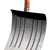
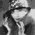

|
 |  | Accueil |
Marcel Duchamp est né en 1887. Il est entré à lOulipo le 16 mars 1962 comme correspondant américain du groupe. Peintre, sculpteur, poète, inventeur du ready made et de lart moderne, il découvre les Impressions dAfrique de Roussel lors dune représentation en 1912. Arrivé à New York en 1915, Duchamp deviendra une vedette très médiatisée ; il proposera sa Fontaine, un simple urinoir signé R. Mutt qui sera refusée au Salon de la Society of Independent Artists de 1917, première d'une série de ready-made provocateurs.
Marcel Duchamp comptera parmi les premiers artistes à accorder le statut d'oeuvre à ses notes de travail, publiées sous forme de fac-similés dans trois boîtes (La Boîte de 1914, La Boîte verte, et La Boîte blanche). Il peindra sa dernière oeuvre, "Tu m' ", en 1918, puis se livrera à des exercices d'une autre nature, comme sa reproduction de la Joconde ornée de moustaches, d'une barbiche et gratifiée de l'inscription L.H.O.O.Q. Il montera, à partir de 1920, des installations qui expérimenteront des effets optiques et que le Pop art nommera "psychédéliques" ("Rotative plaques verre", 1920 et "Disques avec spirales", 1923). Joueur déchecs professionnel de 1929 à 1933, il fait la connaissance de Le Lionnais. Conseiller de Peggy Guggenheim, il poursuit son uvre tout en organisant des expositions sur le surréalisme et le dadaïsme. Il entre en 1959 au Collège de Pataphysique avec, comme tout satrape, le rang de Maître de lOrdre de la Grande Gidouille. Il décède en 1968 après une soirée avec Man Ray. Son dernier rire vient de sa lecture de la biographie dAllais, rédigée par François Caradec. Sur sa tombe est inscrit : « Dailleurs, cest toujours les autres qui meurent. »